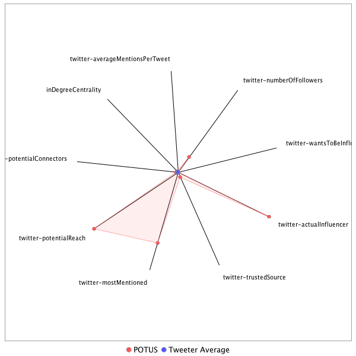

This tweeter has been identified as an influencer. Its target audience and hashtag and word usage are analyzed below.
Basic Statistics
Number of direct followers 1.86309e+07 The peak number of followers that the tweeter had during any time period. Number of retweeters 26 Number of agents that retweeted the key influencer. Number of secondary followers 311506 The sum of the followers of those who retweeted the key influencer.
Measure Values of Other Influencers node versus Tweeter Average
This compares the measure values of the key influencer with the average values across all tweeters. For each measure line, the center-point means zero and the end-point means the maximum score across all tweeters.

Where was the influencer?
The agent is not recorded as being in any locations. Either he tweeted without geo-tags or we have no information about the tweets he sent.
The agent and retweeters were in 1 different locations.

What hashtags did the influencer use?
This displays the top ranked hashtags that the influencer and its retweeters used.
Rank hashtag Count 1 adopt 220 2 AdoptDontShop 170 3 dog 169 4 Qatar 127 5 cat 103 6 Comey 88 7 rescue 88 8 NYC 85 9 BREAKING 83 10 Trump 83 11 foster 79 12 ISIS 70 13 CATS 59 14 Manchester 56 15 ComeyHearing 53 16 Iran 52 17 ParisAgreement 48 18 Russia 48 19 Saudi 47 20 dogs 47 21 AHCA 38 22 Israel 38 23 MAGA 38 24 CA 37 25 Syria 35 26 fakenews 35 27 China 32 28 dogsoftwitter 31 29 ge2017 28 30 yemen 28 31 PLEDGE 27 32 LondonBridge 26 33 SethRich 26 34 potusabroad 26 35 Kitty 25 36 Florida 24 37 Mattis 24 38 MemorialDay 24 39 SessionsHearing 23 40 GA06 22 41 LOVE 21 42 abq 21 43 Iraq 20 44 covfefe 20 45 FF 19 46 NM 19 47 caturday 19 48 Afghanistan 18 49 Mosul 18 50 Tampa 18 51 egypt 18 52 prolife 18 53 CongressionalBaseballGame 17 54 SaudiArabia 17 55 UK 17 56 NorthKorea 16 57 SOS 16 58 US 16 59 mtal 16 60 staffysunday 16 61 AdoptMe 15 62 BestWarrior2017 15 63 ComeyFiring 15 64 Memphis 15 65 Obamacare 15 66 TX 15 67 cdnpoli 15 68 AJNewsGrid 14 69 Brazil 14 70 ComeyTestimony 14 71 GOP 14 72 Houston 14 73 London 14 74 NAFTA 14 75 NATO 14 76 dogsarelove 14 77 odd 14 78 EWA17 13 79 NCSC17 13 80 OTD 13 81 Pakistan 13 82 SCOTUS 13 83 TEXAS 13 84 Turkey 13 85 WhiteHouse 13 86 adoptable 13 87 Alexandria 12 88 ComeyDay 12 89 FoxNews 12 90 HongKong 12 91 KITTEN 12 92 Kittens 12 93 LondonAttacks 12 94 Montana 12 95 ParisAccord 12 96 Pets 12 97 TrumpInIsrael 12 98 UAE 12 99 USArmyReserve 12 100 wmata 12
Tweet List
This displays all of the tweets of the influencer ordered from earliest to latest. Click on a tweet to see its status in Twitter.
Number Tweet ID Date Message 1 866990994427924480 2017-05-23 08:15:35-04 We stand in absolute solidarity with the people of the United Kingdom. https://t.co/P7c8CT7Dm8 2 869204433418280961 2017-05-29 10:51:00-04 The violent attacks in Portland on Friday are unacceptable. The victims were standing up to hate and intolerance. Our prayers are w/ them. 3 872256706423685121 2017-06-06 20:59:39-04 'Historic: 90% cut in new regs, costs slashed to just 0.12% of Obama's' https://t.co/HIlDgTVzt3 4 865574295510102019 2017-05-19 10:26:08-04 Getting ready for my big foreign trip. Will be strongly protecting American interests - that's what I like to do! 5 859786181537669120 2017-05-03 11:06:14-04 Join me along w/ @VP Pence & @BetsyDeVosED at a school choice event in the Roosevelt Room, here at the @WhiteHouse: https://t.co/Pu9RKu6thI https://t.co/NRPoLtsJy3 6 871714538693021696 2017-06-05 09:05:16-04 Today is going to be a big day for our Veterans, thanks to @SecShulkin. Stay tuned! 7 872141607801376768 2017-06-06 13:22:17-04 Today we remember the courage and bravery of our troops that stormed the beaches of Normandy 73 years ago. #DDay https://t.co/7cP7dylEJv 8 872168630959714308 2017-06-06 15:09:40-04 'Trump announces plan to privatize air traffic control system' via @dcexaminer https://t.co/NewhwKEPyI 9 863159634814787586 2017-05-12 18:31:08-04 Terrible two weeks for disastrous #Obamacare! https://t.co/AnFL8LXFn5 10 861608434667585538 2017-05-08 11:47:13-04 Ask Sally Yates, under oath, if she knows how classified information got into the newspapers soon after she explained it to W.H. Counsel.